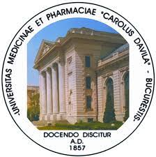

Clasamente ale universităților din București, România 2023:
- University of Bucharest
Mulțumirea studenților: 4.3 / 5.0 (451 recenzii)
- Politehnica University of Bucharest
Mulțumirea studenților: 4.4 / 5.0 (723 recenzii)
- Carol Davila University of Medicine and Pharmacy
Mulțumirea studenților: 4.5 / 5.0 (301 recenzii)

- Bucharest Academy of Economic Studies
Mulțumirea studenților: 4.1 / 5.0 (336 recenzii)
- University of Agronomical Sciences and Veterinary Medicine
Mulțumirea studenților: 4.6 / 5.0 (345 recenzii)
- Titu Maiorescu University
Mulțumirea studenților: 4.3 / 5.0 (106 recenzii)